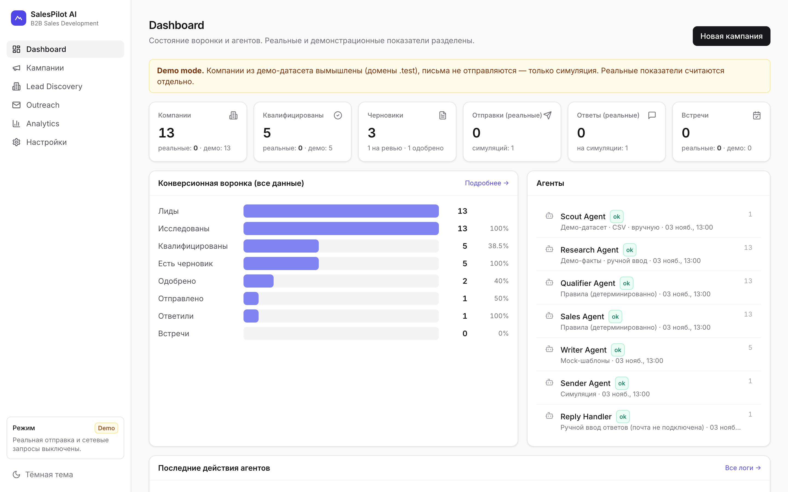
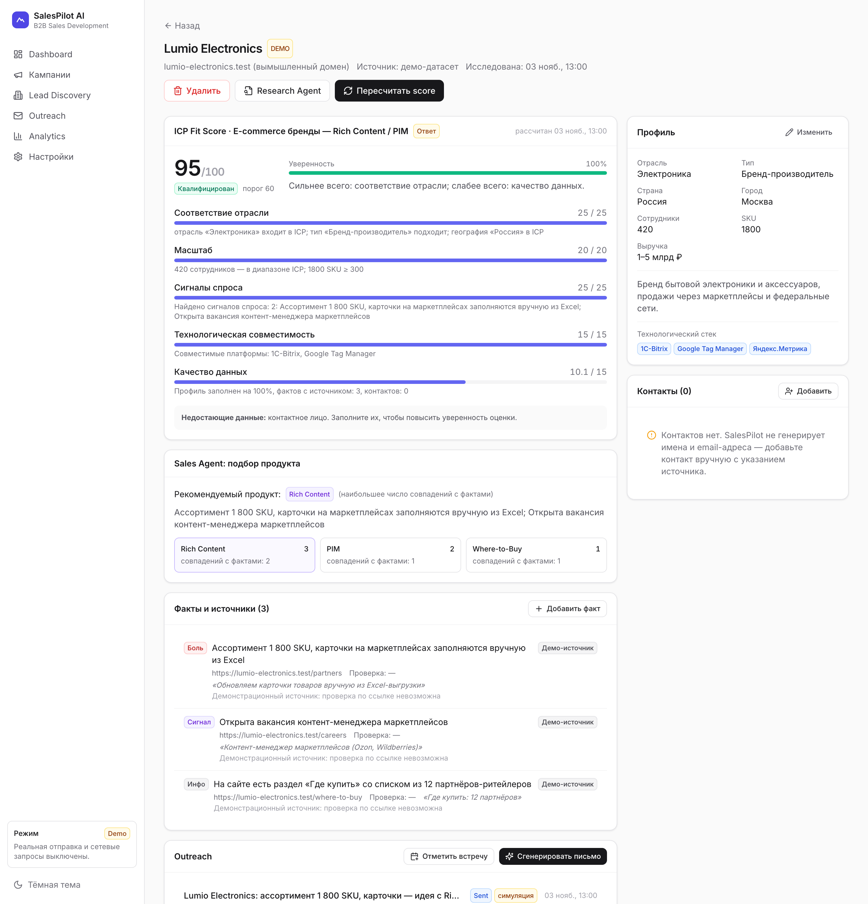
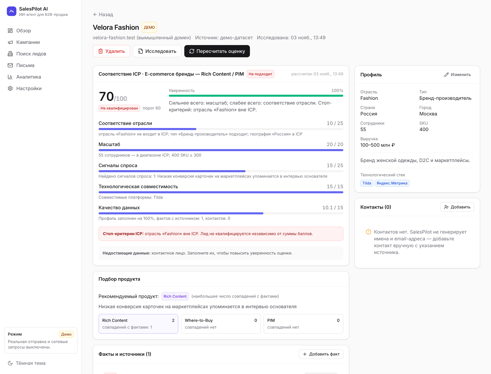
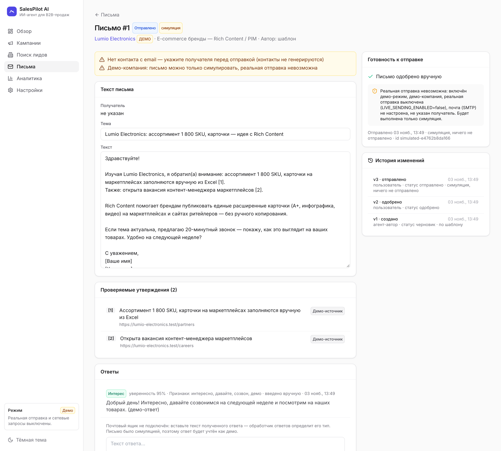
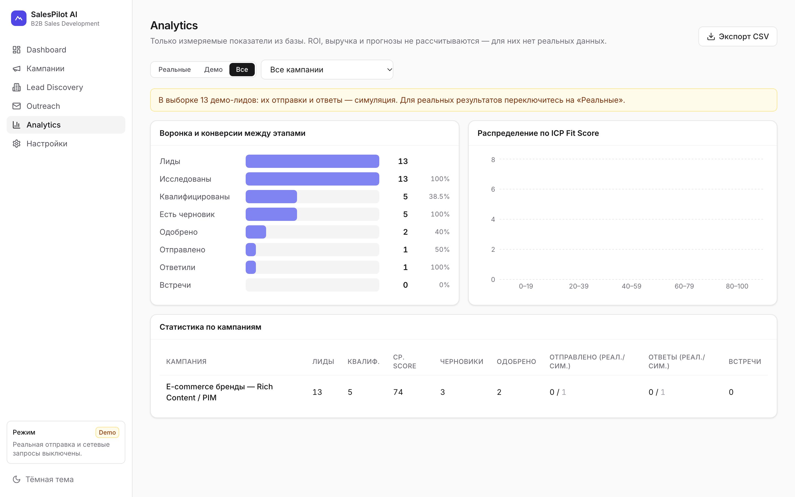

SalesPilot помогает менеджеру по продажам SaaS-решений для e-commerce: находит подходящие компании, оценивает их и готовит персональные письма. Каждый балл оценки объяснён, каждое утверждение в письме ссылается на источник, а отправка возможна только после одобрения человеком.

Менеджер, который продаёт брендам Rich Content, Where-to-Buy и PIM, тратит часы на ресёрч, а AI-инструменты, которые это ускоряют, слишком часто ошибаются там, где ошибка дороже всего.
Ассортимент, маркетплейсы, «Где купить», стек сайта, вакансии собираются вручную по каждой компании.
Разные менеджеры по-разному оценивают одну и ту же компанию, и руководитель не видит, почему лид в работе.
Придуманные факты и имена, отправка без контроля, «встречи», которые нельзя проверить. Это бьёт по репутации домена и бренда.
Доверие вместо автопилота: AI берёт на себя рутину, но каждое его действие прозрачно и обратимо до момента, пока человек не нажал «Отправить».
Оценка из 5 факторов с текстом «почему», уверенностью и списком недостающих данных.
Утверждения в письме помечены [n] и ведут на источник с датой проверки.
Ручное одобрение каждого письма заблокировано в коде, плюс подтверждение и kill switch.
Демо-данные и симуляции никогда не попадают в реальные метрики. ROI не придумывается.
Агенты детерминированы и логируют каждый запуск. Внешние сервисы (языковая модель, почта, чтение сайтов) подключаются через общие интерфейсы: по умолчанию работают безопасные заглушки, реальные сервисы включаются в настройках.
Скриншоты рабочего прототипа в демо-режиме. Компании вымышлены (домены в зарезервированной зоне .test).
Вместо одного числа пять факторов с весами и объяснением. Нехватка данных засчитывается консервативно и снижает уверенность, а не завышает оценку.

Лид вне отрасли или географии ICP не квалифицируется, даже если остальные факторы сильные. Это правило появилось после проверки: без него в работу попадали Fashion и FMCG.

Агент-автор использует только собранные факты и помечает их [1], [2]. Панель готовности честно перечисляет, почему реальная отправка сейчас невозможна.

Воронка, конверсии между этапами, распределение по оценке и статистика кампаний с колонками «реально / симуляция». На вкладке «Реальные» сейчас нули, и это честно.

Поиск лидов · Настройки и интеграции · тёмная тема
Сначала аудит, потом код. От Harvey (MIT) взято то, что делает продукт безопаснее, и оставлено то, что противоречит требованиям прототипа.
| Компонент Harvey | Решение | Зачем / почему нет |
|---|---|---|
tech_detect | Переиспользован | Фактор «технологическая совместимость» без сетевых запросов |
public_http | Переиспользован | Безопасная загрузка сайтов для исследования и проверки фактов |
untrusted.fence | Переиспользован | Защита от prompt-injection в тексте с сайтов |
gate.do_not_contact | Переиспользован | Корректное сопоставление DNC по адресу и домену |
fit.py | Идея развита | «Число + причины» → 5 факторов, уверенность, стоп-критерии |
| Heartbeat-цикл, Claude CLI, Gmail/Instantly, LinkedIn | Не используется | Бесконечный процесс, платная подписка, ToS-риски, поиск email по паттернам |
Все метрики вычислимы из текущей схемы данных. Цели — допущения для проверки, а не результаты.
Полный цикл в демо-режиме, объяснимая оценка, согласование, раздельная аналитика.
Чтение входящих, легальный источник компаний, исследование сайтов с помощью ИИ, вход по SSO и роли.
синхронизация с CRM, цепочки повторных писем, настройка весов по реальным ответам.
Нужны Python 3.11+, Node.js 18+ и git. Ключи, почта и платные сервисы не нужны: всё внешнее выключено по умолчанию.
Флаг --demo сразу создаёт демо-кампанию и прогоняет агентов. После запуска откройте http://127.0.0.1:8000.
# 1. Скачать вместе с Harvey (submodule) git clone --recursive https://github.com/manafkristina-max/salespilot-ai.git cd salespilot-ai # 2. Установить, собрать UI, заполнить демо и запустить ./start.sh --demo # 3. Проверить: 24 автотеста cd backend && .venv/bin/python -m pytest -q